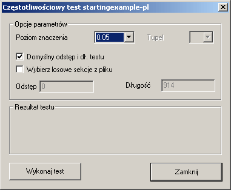
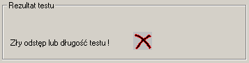
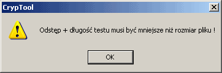
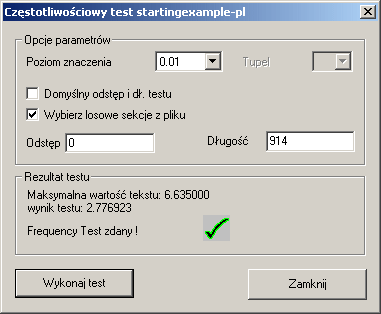
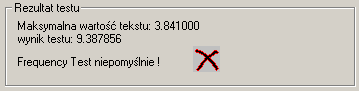

Domyœlne okno dialogowe dla testu czêstotliwoœci wygl¹da tak:

W tym oknie dialogowym istnieje mo¿liwoœæ wyboru oraz zdefiniowania ró¿nych parametrów. Poziom znaczenia mo¿e przyj¹æ jedn¹ z trzech predefiniowanych wartoœci: 0.01, 0.05 oraz 0.10. Pole wyznaczaj¹ce wielkoœæ krotki (Tupel) nie jest przeznaczone do u¿ycia w tym teœcie, dlatego wiêc jest wy³¹czone.
Checkbox Domyœlny odstêp i d³ugoœæ tekstu s³u¿y do podjêcia decyzji, czy u¿yæ domyœlnych wartoœci (odstêp = 0 oraz d³ugoœæ = d³ugoœæ pliku), b¹dŸ te¿ wartoœci zdefiniowanych przez u¿ytkownika.
Zaznaczenie checkbox'a Wybierz losowe sekcje z pliku powoduje wygenerowanie losowych wartoœci odstêpu i d³ugoœci testowej. Je¿eli wartoœci odstêpu i d³ugoœci zosta³y zdefiniowane przez u¿ytkownika oraz checkbox Wybierz losowe sekcje z pliku jest zaznaczony, wartoœci podane przez u¿ytkownika s¹ wykorzystywane w procesie generacji wartoœci losowych.
Je¿eli podane wartoœci s¹ niepoprawne, wyœwietlona zostaje poni¿sza wiadomoœæ o b³êdzie:

Wyœwietlone zostaje tak¿e poni¿sze okno:

Aby wykonaæ test, nale¿y klikn¹æ przycisk Wykonaj test.
Po naciœniêciu przycisku Wykonaj test, okno dialogowe powinno wygl¹daæ tak:

Maksymalna wartoœæ tekstu jest wielkoœci¹ statystyczn¹, zale¿n¹ od poziomu znaczenia. Test jest zaliczony, je¿eli nie zostanie przekroczona.
Wynik jest wartoœci¹ statystyczn¹ generowan¹ przez test. Zostaje ona porównana z wyliczon¹ wczeœniej wartoœci¹ maksymaln¹.
Je¿eli dane nie przejd¹ testu pomyœlnie, w oknie dialogowym pojawi siê poni¿sza wiadomoœæ:

Aby zamkn¹æ okno dialogowe i powróciæ do g³ównego okna programu CrypTool, kliknij przycisk Zamknij.